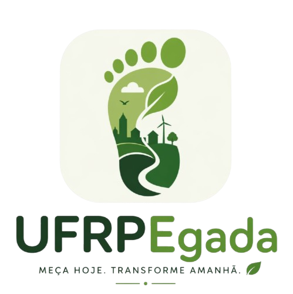

Reduza sua pegada ecológica no campus
Monitore seus hábitos diários, visualize seu impacto ambiental e contribua para um futuro mais sustentável
Registre hábitos
Acompanhe suas atividades diárias e seu consumo de recursos
Veja seu impacto
Visualize gráficos e dados sobre sua pegada de carbono
Melhore sua rotina
Receba dicas personalizadas para reduzir seu impacto ambiental